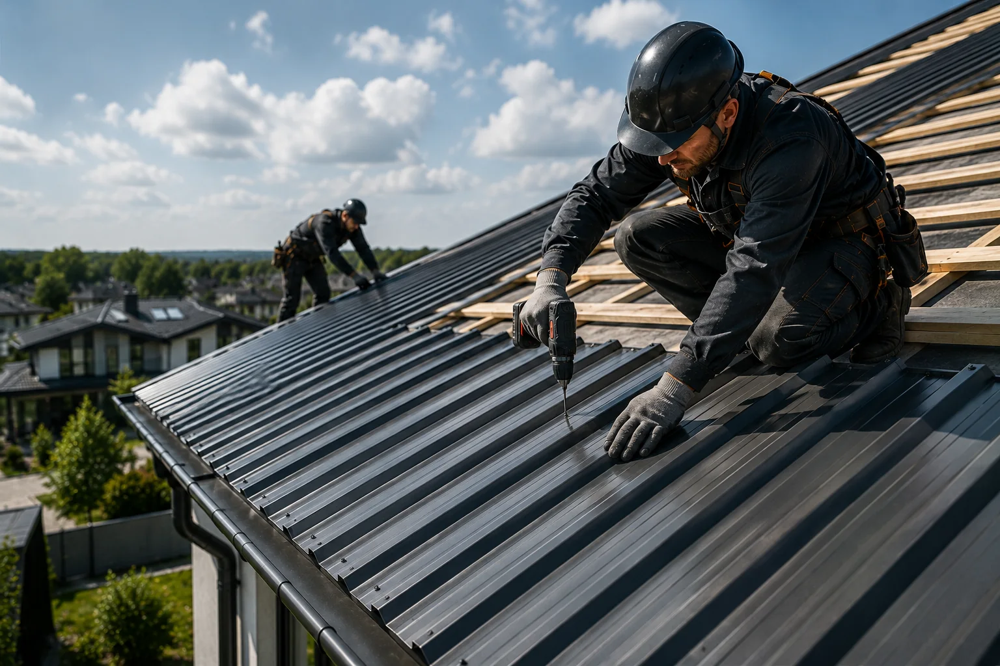

Коммерческий объект
Кровля супермаркета Посад в Харькове
Реальный коммерческий объект в Харькове. На фото готовая мембранная кровля с примыканиями, парапетами и проходами.
Выполнено на объекте- мембранная кровля
- оформление примыканий
- работа с парапетами
- контроль проходов